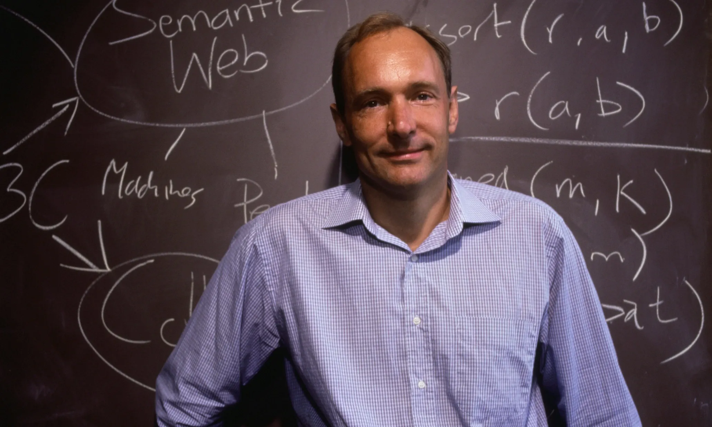

Back ပုံများ မူလစာမျက်နာသို့ အကြံပြုရန် စရင်းအသစ်ဖွင့်မည် | နမည်နှင့်ဝင်မည်
Tim Berners-Lee: The Father of the World Wide Web
Tim Berners-Lee တင်မ် ဘာနာလီ (အင်္ဂလိပ်: Sir Timothy John Berners-Lee) ကွန်ပျူတာ သိပ္ပံပညာရှင်တစ်ဦးဖြစ်ပြီး World Wide Web ကို တီထွင်ခဲ့သူတစ်ဦးအဖြစ် ထင်ရှားသည်။ ၁၉၈၉ ခုနှစ် မတ်လတွင် ကွန်ပျူတာ သတင်းအချက်အလက် စီမံခန့်ခွဲမှုစနစ်ကို တီထွင်ပေးရန် ကမ်းလှမ်းခြင်းခံရသည်။HTTP (Hypertext Transfer Protocol) စနစ်ကို ပထမဦးဆုံး အောင်မြင်စွာ တီထွင်နိုင်ခဲ့သည်။ ထိုနှစ် နိုဝင်ဘာလလယ်တွင် အင်တာနက်မှတစ်ဆင့် client-server ဆက်သွယ်ရေး စနစ်ကို ပထမဦးဆုံး အောင်မြင်စွာ တီထွင်နိုင်ခဲ့သူဖြစ်သည်။
ဘဝအစ တင်မ်ကို အင်္ဂလန်၊ လန်ဒန်အရှေ့တောင်ပိုင်းတွင် ၁၉၅၅ ခုနှစ်၊ ဇွန်လ၊ ၈ ရက်နေ့တွင် မွေးဖွားခဲ့သည်။[၈] ဖခင် ကွန်းဝေး ဘာနာလီနှင့် မိခင် မေရီ လီဝုဒ်တို့၏ သားသမီး လေးဦးအနက် တစ်ဦးဖြစ်သည်။ သူ့မိဘများသည် ပထမဦးဆုံး လုပ်ငန်းသုံး အနေဖြင့် ထုတ်လုပ်ခဲ့သည့် Ferranti Mark 1 ကွန်ပျူတာဖြင့် အလုပ် လုပ်ခဲ့သူများဖြစ်သည်။
တင်မ်သည် ရှင်းမောင့် မူလတန်းကျောင်းတွင် ပညာသင်ခဲ့သည်။ ထို့နောက် လန်ဒန် အနောက်တောင်ပိုင်း လွတ်လပ်သည့် ဧမာနွေလကျောင်းသို့ ပြောင်းကာ ၁၉၆၉ ခုနှစ်မှ ၁၉၇၃ ခုနှစ်အထိ ကျောင်းတက်ခဲ့သည်။ မီးရထားစက်ခေါင်းများကို စိတ်ဝင်စားသူဖြစ်သဖြင့် မီးရထားဆိုင်ရာ အီလက်ထရောနစ်ပညာများကို ကလေးဘဝကတည်းက စူးစိုက်လေ့လာခဲ့သည်။ အောက်စ်ဖိုဒ် တက္ကသိုလ် လက်အောက်ခံ ကွင်းစ်ကောလိပ်တွင် ၁၉၇၃ ခုနှစ်မှ ၁၉၇၆ ခုနှစ်အထိ တက်ရောက်ပညာသင်ကြား ခဲ့သည်။ ပထမဘွဲ့အဖြစ် ရူပဗေဒဘွဲ့ကို ရရှိခဲ့သည်။
လုပ်ဆောင်ချက်များ။ ၂ဝဝ၉ ခုနှစ် ဇွန်လတွင် ဗြိတိန် ဝန်ကြီးချုပ် ဂေါ်ဒန် ဘရောင်းက ဘာနာလီကို ဗြိတိန်အစိုးရကို အင်တာနက်ဆိုင်ရာလုပ်ငန်းရပ်များ အဆင်ပြေစေရေးအတွက် အကူအညီပေးနေကြောင်း ကြေညာခဲ့သည်။ အစိုးရဌာနတစ်ခုဖြစ်သည့် သတင်းအချက် အလက်နှင့် နည်းပညာအထူးတပ်ဖွဲ့တွင် သူရုံးထိုင်နေသည်။ ဗြိတိန်အစိုးရ၏ Website ဖြစ်သော data.gov.uk တွင် ဘာနာလီနှင့် ပါမောက္ခ နီဂဲလ် ရှက်ဘို့တို့သည် အစိုးရပရောဂျက်ကို အဓိကကိုင်တွယ်ပေးနေသူများဖြစ်လာသည်။
၂ဝဝ၉ နိုဝင်ဘာတွင် ဘာနာလီသည် World Wide Web ဖောင်ဒေးရှင်းကို ထူထောင်ခဲ့သည်။ အင်တာနက် Web ကို အသုံးပြုပြီး ဆက်သွယ်ပေါင်းကူးကာ လူသားအကျိုးပြု လုပ်ငန်းများကို လုပ်ဆောင်နိုင်စေရန် ထိုဖောင်ဒေးရှင်းကို ထူထောင်ခဲ့ခြင်းဖြစ်သည်။ ထို့ပြင် ဘာနာလီသည် အင်တာနက်တွင် ဝင်ရောက်ကြည့်ရှုသူများကို စောင့်မကြည့်ရေး၊ လွတ်လပ်စွာလေ့လာခွင့်ရရေး၊ အင်တာနက် ထိန်းချုပ်မှုကင်းရေးတို့အတွက်လည်း လှုပ်ရှားဖော်ထုတ်ခဲ့သူဖြစ်သည်။
သူက Net Neutrality ဆိုသည့်သဘောတရားကို ဖော်ထုတ်ခဲ့သည်။ အထူးသဖြင့် အင်တာနက်လွတ်လပ်ခွင့်ကို လူ့အခွင့် အရေးတစ်ရပ်အနေဖြင့် တိုက်ပွဲဝင်ခဲ့ခြင်းဖြစ်သည်။ “ကုမ္ပဏီများ၊ အစိုးရများအနေဖြင့် အင်တာနက်လမ်းကြောင်းကို အမျိုးမျိုးဝင်ရောက်နှောက်ယှက်ခြင်း၊ ခိုးကြည့်ခြင်းတို့သည် အင်တာနက်ကို ခြိမ်းခြောက်ခြင်းဖြစ်ပြီးလူသားကွန်ရက်အခွင့် အရေးကို ချိုးဖောက်ရာရောက်သည်” ဟုသူကပြောဆိုခဲ့သည်။
ရ ရှိခဲ့သော ဆုများ။ ၂ဝဝ၄ ခုနှစ်တွင် ဘာနာလီကို လူသားအကျိုးပြု တီထွင်ခဲ့မှုဖြင့် ဒုတိယမြောက် အဲလိဇဘက် ဘုရင်မကြီးက သူရဲကောင်းဘွဲ့ (Knight) ချီးမြှင့်ခဲ့သည်။ ၂ဝဝ၉ ခုနှစ်တွင် အမေရိကန်ပြည်ထောင်စု အမျိုးသားအကယ်ဒမီသိပ္ပံက သူ့ကို ဂုဏ်ထူးဆောင် ဘွဲ့ချီးမြှင့်ခဲ့သည်။ ၂ဝ၁၂ ခုနှစ် နွေရာသီအိုလံပစ်ပြိုင်ပွဲအခမ်းအနားတွင် World Wide Web ကိုတီထွင်သူတစ်ယောက် အနေဖြင့် ဂုဏ်ပြုတက်ရောက်စေခဲ့သည်။ ၂ဝ၁၃ ခုနှစ်တွင် အဲလိဇဘက်ဘုရင်မကြီးက ပေးအပ်သည့်ဆုကို အင်တာနက် တီထွင် သူ ငါးဦးအနက်မှ တစ်ဦးအဖြစ်လက်ခံရရှိခဲ့သည်။

Tim Berners-Lee အချက်အလတ် ဇယား။
Name
Tim Berners-Lee
Born
Timothy John Berners-Lee
8 June 1955 (age 70)
London, England
Education
University of Oxford (BA)
Children
2 children
3 step-children
Parents
Conway Berners-Lee (father)
Awards
Turing Award (2016)
အပေါ်သို့